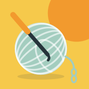

ClarochetTravou na receita de crochê?
Mande a foto, o PDF ou o texto. O Clarochet explica carreira por carreira, em palavras simples, confere a conta dos pontos e lembra onde você parou.
O que ele faz
- Explica cada carreira em passos simples, com as repetições.
- Confere a conta dos pontos e avisa quando não bate.
- Receitas em inglês, espanhol ou português, com nomes americanos e britânicos.
- Contador de pontos, glossário e progresso salvo.
- Fotos e PDFs lidos no seu iPhone. A IA só entra quando você pede.
Stuck on a crochet pattern?
Send a photo, PDF or the text. Clarochet explains it row by row in plain words, checks your stitch counts and remembers where you stopped.
What it does
- Explains every row in simple steps, repeats included.
- Checks the stitch count and tells you when it doesn't add up.
- Patterns in English, Spanish or Portuguese, US and UK terms.
- Stitch counter, glossary and saved progress.
- Photos and PDFs are read on your iPhone. AI is only used when you ask.
¿Te atascaste con el patrón de crochet?
Envía la foto, el PDF o el texto. Clarochet lo explica vuelta por vuelta con palabras sencillas, revisa la cuenta de puntos y recuerda dónde te quedaste.
Qué hace
- Explica cada vuelta en pasos sencillos, con las repeticiones.
- Revisa la cuenta de puntos y avisa cuando no cuadra.
- Patrones en inglés, español o portugués, con nombres americanos y británicos.
- Contador de puntos, glosario y progreso guardado.
- Las fotos y los PDF se leen en tu iPhone. La IA solo entra cuando la pides.